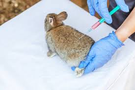
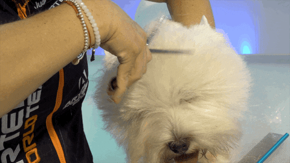

Nuestra veterinaria ofrece servicios como consultas, cirugías, baños y vacunas.

Nuestra veterinaria ofrece servicios como consultas, cirugías, baños y vacunas.

| Tipos de Servicios |
|---|
| Consultas y chequeos generales |
| Vacunación y desparasitación |
| Laboratorio de análisis |
| Identificación animal (Microchip) |
| Cortes y mucho mas |
